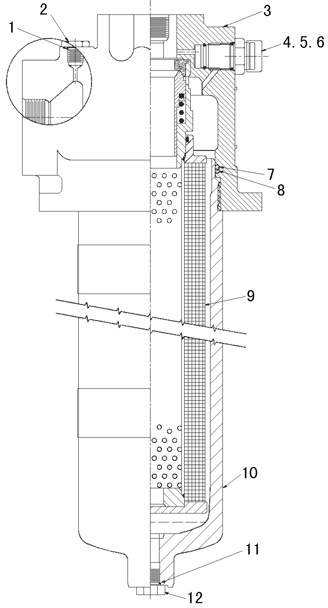

低压油滤器总成. · LOW PRESSURE OIL FILTER ASSY
Общие сведения
Если не указано иное, номера позиций в скобках совпадают с номерами позиций на рис. 1.
Гидравлическая система автомобиля оснащена 3 фильтрами высокого давления, предназначенными для очистки гидравлического масла от загрязняющих веществ, улучшения работоспособности компонентов системы и продления их срока службы.
1. Система подъема: два гидравлических фильтра в сборе (каждый из них устанавливается в гидравлическом трубопроводе на выходе насос подъема в сборе) расположены на кронштейне с внутренней стороны левого лонжерона рамы перед гидробаком.
2. Система рулевого управления: один гидравлический фильтр в сборе (устанавливается в гидравлическом трубопроводе на выходе насоса рулевого управления в сборе), расположен на кронштейне с внутренней стороны левого лонжерона рамы перед гидробаком.
Управление
Гидравлическое масло под высоким давлением от гидронасоса в сборе подается на вход фильтра и поступает в центр фильтрующего элемента (9), масло выходит через выход после прохождения гидравлического масла под высоким давлением через фильтрующий элемент (9).
Каждый гидравлический фильтр в сборе оснащен одним предохранительным клапаном или перепускным клапаном, если температура масла низкая или засорение фильтрующего элемента фильтра серьезное, то данный клапан ограничивает максимальный перепад давления на фильтрующем элементе до 50±5 фунтов/кв. дюйм (345±35 кПа).
Отдельный перепускной регулятор (4) контролирует и показывает перепад давления на фильтрующем элементе. В стандартной комплектации используется индикатор механического типа, расположенный в верхней части фильтра в сборе, когда перепад давления на фильтрующем элементе приближается к давлению срабатывания перепускного клапана, индикатор механического типа системы приводится в действие.
Гидравлическая система обеспечивает системе рулевого управления, системе подъема, тормозным системам, вспомогательным устройствам и соответствующим элементам движущую силу, обеспечивающую перемещение жидкости, для получения более подробной информации обратитесь к описанию ряда систем и модулей компонентов.
Снятие и установка
Периодический ремонт включает в себя следующие виды работ:
1. Проверить фильтр в сборе, штуцеры и шланги на наличие утечек или повреждений, в случае обнаружения проблем, следует отремонтировать или заменить по мере необходимости.
Примечание:
1. Необходимо лишь регулярно проверять сигнализатор перепада давления, как правило, в течение межремонтного периода не требуется обращения особого внимания на фильтр.
2. В случае обнаружения утечки гидравлического масла, следует заменить уплотнительный элемент в точке утечки. В случае обнаружения утечки через уплотнительный элемент чашки фильтра, следует заменить О-образное кольцо (7) и стопорное кольцо (8), при замене использовать указанное на рисунке стопорное кольцо (8).
3. Если утечка продолжается, то проверить уплотнительную поверхность на наличие царапин или трещин. Заменить поврежденные или дефектные детали.
2. Когда гидравлическое масло находится при рабочей температуре (например, температура должна быть выше 120°F [49℃]), все элементы управления находятся в нейтральном положение (например, следует освободить клапан рулевого управления и тормозной кран, рычаг управления подъемом находится в плавающем положении):
a. Проверить расположение механического указателя. Если красную кнопку указателя представляет собой переключатель с задержкой времени, то нажать на кнопку.
b. Запустить двигатель.
c. Довести частоту вращения двигателя до номинального значения и поддерживать данную частоту вращения.
d. Выполнить следующие проверки:
(1) Если фильтр оснащен индикатором механического типа, то индикатор должен находится в нажатом состоянии.
ПРИМЕЧАНИЕ: Данный индикатор информирует о том, что перепад давления на фильтрующем элементе (9) достигает определенного значения, данное значение свидетельствует о том, что позволило или позволит перепускать гидравлическое масло в подлежащую фильтрации среду, при этом не осуществляется фильтрации от примесей.
e. Уменьшить частоту вращения двигателя, перевести его в режим холостого хода, затем выключить двигатель.
Замена фильтрующего элемента фильтра
Замена фильтрующего элемента фильтра производится в следующем порядке:
1. Остановить карьерный самосвал в безопасном месте, надежно держать карьерный самосвал в неподвижном с помощью стояночной тормозной системы, подложить клинья под колеса.
2. Полностью сбросить все гидравлическое давление в энергоаккумуляторе рулевого управления и тормозном энергоаккумуляторе и давление в гидробаке карьерного самосвала в соответствии с порядком сброса давления в гидравлической системе.
ПРЕДУПРЕЖДЕНИЕ
Невыполнение процедуры сброса давления в гидравлической системе перед началом ремонта гидравлического фильтра в сборе может вызвать резкое разбрызгивание и потери гидравлического масла, повреждение оборудования, даже привести к телесным повреждениям.
ПРЕДУПРЕЖДЕНИЕ
Как правило, гидравлическое масло в гидравлической системе работает при высокой температуре. При сливе гидравлического масла будьте особенно осторожны, избегайте попадания масла на кожу или одежду.3. Ставить емкость для сбора масла под подлежащий ремонта гидравлический фильтр в сборе.
4. Открутить маслосливную пробку (2) фильтра на 1-1/2 оборота, сбросить давление в гидравлическом фильтре.
5. Снять маслосливную пробку (12), полностью слить гидравлическое масло из корпуса патрона (10).
6. Повторно установить и затянуть маслосливную пробку (12) и маслосливную пробку (2), но не допускается перетягивание.
7. Ослабить (против часовой стрелки) корпус патрона (10) на крышке фильтра в сборе (3) и снять его.
ПРИМЕЧАНИЕ: Возможно, в первую очередь придется надеть подходящий ключ на шестигранную головку держателя корпуса патрона (10) гидравлического фильтра, чтобы ослабить чашку фильтра.
8. Снять фильтрующий элемент (9), уплотнительное кольцо (7) и стопорное кольцо (8).
9. Тщательно проверить наличие/отсутствие видимых загрязняющих веществ на поверхности или повреждений. Как правило, не допускается наличие видимых загрязняющих веществ или мелких частиц, наличие некоторых посторонних предметов свидетельствует о вероятности повреждения старой детали системы сигнализации и указывает на потенциальную неисправность.
10. Фильтрующий элемент фильтра (9), уплотнительное кольцо (7) и стопорное кольцо (8) должны быть забракованы. Очистка фильтрующего элемента фильтра (9) не допускается. Любая попытка очистки фильтрующего элемента (9) может привести к ухудшению свойств фильтрующей среды и пропусканию загрязненного гидравлического масла через фильтрующий элемент (9) гидравлического фильтра.
ПРЕДУПРЕЖДЕНИЕ
Не пытайтесь очищать или повторно использовать фильтрующий элемент или уплотнительный элемент.11. Проверить и снять все остальные О-образные кольца и стопорные кольца, включая О-образные кольца и стопорные кольца пробок.
12. Очистить корпус патрона (10) и крышку фильтра в сборе (3) чистым растворителем. Проверить наличие/отсутствие износа, следов протечек и повреждений. В случае обнаружения проблем, отремонтировать или заменить по мере необходимости.
13. Смазывать все новые О-образные кольца, стопорные кольца и резьбу чашки фильтра (10) чистым гидравлическим маслом того же типа, которое не отличается от масла в гидравлической системе карьерного самосвала. Установить все уплотнительные кольца на указанные на рисунке места надлежащим образом.
14. Смазывать О-образные кольца фильтрующего элемента чистым гидравлическим маслом того же типа, которое не отличается от масла в гидравлической системе карьерного самосвала. Установить новый фильтрующий элемент (9) в вертикальном положении на фитинг крышки в сборе (3).
ПРИМЕЧАНИЕ: Подтолкнуть с умеренным усилием вверх снизу фильтрующего элемента, правильная установка уплотнительного кольца на предохранительный клапан крышки в сборе должно позволять незначительно свободно переместить фильтрующий элемент. Если это невозможно, то проверить и убедиться в надежной установке фильтрующего элемента.
ВАЖНОЕ ПРИМЕЧАНИЕ: Ненадлежащая установка фильтрующего элемента дает возможность перепускать гидравлическое масло в фильтрующий элемент, это может вызвать невозможность достаточной фильтрации гидравлического масла и негативно влиять на защиту системы и элементов.
15. Установить корпус патрона (10) на крышку в сборе (3). Закрутить чашку фильтра на крышку в сборе (3) до упора. Не допускается перетягивание, иначе это может привести к нарушению герметичности О-образного уплотнительного кольца.
ПРЕДУПРЕЖДЕНИЕ
Закручивание чашки фильтра на крышке в сборе производится только с помощью подходящего ключа, нельзя использовать трубные клещи, молоток или другие инструменты.16. Установить маслосливную пробку (12) с новым О-образным кольцом.
17. Запустить двигатель и дать ему поработать на холостом ходу, проверить гидравлическую систему на наличие утечек.
18. В случае попадания воздуха в гидравлической системе, удалить воздух в соответствии с порядком, указанным в части 5 - «Гидравлическая система».
19. После достижения рабочей температуры гидравлического масла проверить состояние фильтра в соответствии с вышеуказанными требованиями.
ВАЖНОЕ ПРИМЕЧАНИЕ: Загрязнение системы может привести к преждевременному засорению нового фильтрующего элемента фильтра, в частности фильтрующего элемента для фильтрации типичных частиц. Возможно, придется заменить 1 или 2 фильтрующих элемента оригинальными с целью продления срока службы фильтрующих элементов.
Ремонт
Кроме периодической замены фильтрующего элемента фильтра, при проведении ремонта еще следует заменить негодный уплотнительный элемент или отремонтировать поврежденные элементы или штуцеры.
ПРИМЕЧАНИЕ: При замене индикатор механического типа (4) следует установить О-образные кольца (5 и 6) и затянуть индикатор механического типа или электронный переключатель перепада давления (4) до достижения момента 40 фут-фунтов(54 Н.м).
Устранение неисправностей
ВопросыВозможная причинаМетод устраненияЧрезмерный перепуск гидравлического маслаСлишком низкая температура маслаПри слишком низкой температуре масла увеличивается количество перепускаемого гидравлического масла, следует проводить осмотр при нормальной температуре.Засорение или повреждение фильтрующего элементаСледует своевременно заменить фильтрующий элемент новым
Гидравлическая система - гидравлический фильтр
050-0010
2
SMC014 7-01 1
Гидравлическая система - гидравлический фильтр
050-0010
1
Гидравлическая система - гидравлический фильтр
050-0010
Гидравлическая система - гидравлический фильтр
050-0010
SMC014 7-01 3
12
11
10
9
8
7
3
2
1
4.5.6
1. О-образное кольцо5. О-образное кольцо9. Фильтрующий элемент 2. Маслосливная пробка6 О-образное кольцо10. Корпус патрона гидравлического фильтра3. Крышка фильтра в сборе7. О-образное кольцо11. О-образное кольцо4. Индикатор или электронный переключатель давления8. Стопорное кольцо12. ПробкаРис. 1. Схема конструкции гидравлического фильтра
ПРЕДУПРЕЖДЕНИЕ
Невыполнение процедуры сброса давления в гидравлической системе перед началом ремонта гидравлического фильтра в сборе может вызвать резкое разбрызгивание и потери гидравлического масла, повреждение оборудования, даже привести к телесным повреждениям.
ПРЕДУПРЕЖДЕНИЕ
Невыполнение процедуры сброса давления в гидравлической системе перед началом ремонта гидравлического фильтра в сборе может вызвать резкое разбрызгивание и потери гидравлического масла, повреждение оборудования, даже привести к телесным повреждениям.
Иллюстрации
